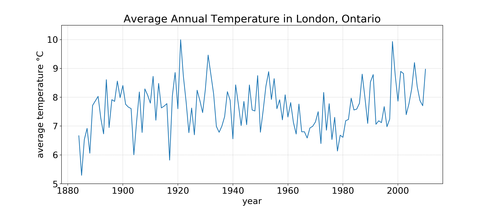

Assignment #1: London Weather Analysis¶
Weight: 10%
DUE: Friday September 27th at 5pm, via OWL
Marking Scheme:
A1_MarkingScheme.txt
Some residents of London, Ontario seem to have short memories. Each winter, people from Byron to Argyle can be heard exclaiming that “This is the coldest Winter London has ever had!” Then, in the summer, it’s the opposite: “This summer heat is the most unbearble it’s ever been!” Your job is to answer, definitively, “What are the extremes of cold and heat on record in London, Ontario?”
In this assignment, you will use a real dataset of historical weather data, drawn from Historical Climate Data - Government of Canada. Historical temperature data for London, Ontario is provided covering the period from 1883 to 2019.
You will need the data file London_mean_etr_max_etr_min.csv (try
London_mean_etr_max_etr_min.zip if you have an issue downloading a
csv file, or it gets converted to a txt file). Download this to your computer and
save it in the same directory that you will save your assignment. I’ve
transformed the raw dataset into a nice, easy to use, “comma separated values”
(CSV) file. We’ll learn more about those later in the class; in fact, by the end
of the course, you’ll know enough to work with the millions of data records
yourself! For now, you can simply use the function I provide for loading the
dataset.
This file contains a number of rows and columns, just like a typical spreadsheet. The first column contains a year, the second a numerical month, followed by the mean temperature, the extreme high and extreme low temperatures for that month.
To make life easier for the first assignment, you don’t have to start from scratch. I’ve already started a file for you to use as a template. This is also somewhat realistic for a research programmer; you don’t often start completely from scratch… usually, you’re trying to modify someone else’s code that you downloaded or inherited.
Download A1.py to get you started.
The steps you need to do are laid out, in detail (and suggested order) below.
Important:¶
Make sure not to change the filename of the assignment or any of the function names or their signatures (parameters, default values, etc.).
To make sure that you have not changed anything, download the script
A1_check.py to the same folder as your
assignment and run it, which will tell you if anything has been changed.
You may lose marks if you change the functions.
Finish the “coldest_month” function¶
Your first task is to find the month and year in which the coldest temperature
in the dataset occurs, as well as the extreme coldest temperature for that
month. Your colleague has started a function, but never completed it. Complete
the coldest_month(records) function. It should return a formatted string
that neatly presents the requested information. For example:
>>> coldest_month(records)
January 2015 was the coldest month on record with an extreme minimum
temperature of -25.9 degrees.
You will need to convert the numerical value of the month in the database to its English name to produce this output. HINT: You can do this however you like, but a function could be useful for this task.
Now test your function. To do that you’ll need to write some code at the very
bottom of your .py file to do two things:
Load the dataset using the provided function and store it in a variable Run
your
coldest_monthfunction on the dataset
Finish the “warmest month” function¶
You’ve found the coldest - now find the warmest. Complete the
warmest_month(records) function. This function should return a string that
is formatted similarly to coldest_month and gives the month, year, and the
extreme warmest temperature on record.
Test this function using the same strategy as for coldest_month.
Finish the “print_mean_annual_temperature” function¶
The previous two functions returned information that was contained directly in the data. Now, let’s use the data to gain new insight.
Given a year, if it is possible, print a message that gives that year’s mean temperature.:
>>> print_mean_annual_temperature(2001, records)
The mean temperature in 2001 was 7.9 degrees.
For this function, you will need to use data for each of the 12 months in an expression that computes the mean temperature. Notice that in this function, you don’t need to return any value - the function should call the print function instead with a formatted string.
The challenge here is that it may not be possible to compute an annual average for two different reasons:
there is are not enough entries the database for that year to compute a 12 month average;
there is missing data, i.e. where
nan(standing for ‘not a number’) appears in place of a meaningful value. For this case you may find themathmodule helpful. You can load themathmodule with the code:import mathI have already done this for you. You can then check if a float value
valis invalid using the function callmath.isnan(val)(note thatnanis a valid float value, it’s just not a number).
In either of these two conditions, you should print out a message saying that the mean temperature data is unavailable for that year.
BONUS: Plotting Mean Temperatures Over Time¶
Note
This is a bonus problem. You do not have to do this question, and there are no marks for it.
Write a function that takes ‘records’ as a parameter and produces a plot of the mean temperature over all years in the data. You should be able to do this using simple functions from matplotlib - just Google it! Here’s an example of what such a plot might look like. Try setting different titles, colours, line styles, etc. If you can’t figure this out (yet) on your own don’t worry, we’ll cover how to do this later in class.
Have a peek at the data-loading function¶
This time, the function that loads the data is a freebie. It contains some stuff we haven’t discussed in class yet, but it’s fairly easy to work out the basic idea of what’s going on if you look at it. So look at it. Get used to looking at code that isn’t yours, and may use unfamiliar ideas/idioms/patterns, and trying to figure out what it does. This isn’t always easy (sometimes it’s very hard), but you’ll spend a lot of time doing it (whether you want to or not!).
What to submit on OWL¶
Copy and paste the contents of your version of
A1.pyinto the text box supplied on OWL.Make sure your NAME and STUDENT NUMBER appear in a comment at the top of the program (the script
A1_check.pywill also prompt you to do this).List anyone you worked with in the comments, too.
A text file containing the output of your program (you can copy and paste this from the interpreter window). Add this to your submission as an attachment.
Example output:
January YYYY was the coldest month on record with an extreme minimum
temperature of X degrees.
July YYYY was the warmest month on record with an extreme maximum temperature
of Z degrees.
Some hints¶
Work on one function at a time.
Get each function working perfectly before you go on to the next one.
Test each function as you write it.
This is a really nice thing about Python: you can call your function right from the interpreter prompt and see what result gets returned. Does it look reasonable? Good! Check it!
If you need help, ask! Try OWL. Drop by my office. Ask the TA during tutorials. We’re here to help.
Remember that it is not only ok but actively encouraged to work together; you just need to submit your own work.